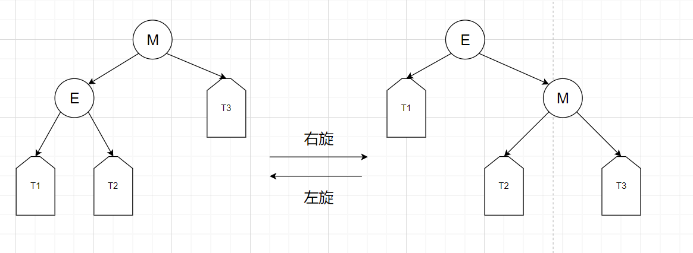

数据结构中的各种树
众所周知，树是数据结构中很重要的一个部分，我们平常的编程设计中也经常用到，比如STL底层的map, multimap, set, multiset部分的底层就用到了红黑树，priority_queue用到了完全二叉树，树是一种特殊的图，有向无环图，除了根节点其他节点入度都为1，这篇博客的主要内容主要讲解“几棵”很有意思的树。
BST和AVL树
BST
我们都知道，在一个有序序列中，我们要查找一个元素，用二分的方法就能解决，时间复杂度的大小为*O(logn)*，具体过程如下：
1 | // 有序序列arr查找元素4, 左指针l，右指针r，中间指针mid |
1 | bool search(const vetor<int> &arr, int val) { |
我们可以看出每一次筛选都可以过滤掉一半元素，和我们二叉树的左右子树很相似，因此就有了下面的二叉查找树（BST）：
1 | 7 |
二叉查找树有一个特点就是所有节点的左子树的最大值小于等于该节点的值，右子树的最小值大于等于该节点的值。这就意味这我们可以在遍历过程中筛选出掉一半元素。
1 | /* |
相比两份代码，其实核心部分都是一样的，比较筛选，而且筛选掉一半。
这看起来貌似二叉查找树作为我们存储数据的底层结构似乎非常完美，插入删除查找的复杂度貌似都是”O(logn)“?其实并不是，在某种极端条件下，二叉查找树的查找能力非常糟糕。
1 | // 我们按顺序插入一下元素 1 2 3 4 5 6 7 8 |
这还是一棵二叉查找树吗？是的，虽然很离谱，但他就是一棵二叉查找树，这种情况下的查找复杂度是*O(n)*，这是不能忍受的，所以我们要引入二叉查找树插入优化后的树——B树。
AVL树
为了避免上诉的这种情况（及其不平衡的BST），我们引入了平衡二叉树（AVL树），在插入和删除的过程中对树的平衡因子进行严格控制，平衡二叉树中每个结点的左右子树的高度差不大于1，如何调整则是一个大问题，具体的旋转类型有LL旋转，LR旋转、RR旋转、RL旋转
LL旋转
1 | 5 5 |
插入2后明显4结点不平衡了，从4开始寻找2发现位置为左子树的左子树，所以类型为LL旋转
LR旋转
1 | 5 5 |
插入3后明显4结点不平衡了，从4开始寻找3发现位置为左子树的右子树，所以类型为LR旋转
RR旋转
1 | 2 2 |
插入5后明显3结点不平衡了，从3开始寻找5发现位置为右子树的右子树，所以类型为RR旋转
RL旋转
1 | 2 2 |
插入4后明显3结点不平衡了，从3开始寻找4发现位置为右子树的左子树，所以类型为RL旋转
旋转方法
方法与旋转类型无关。且一种方法就可应对四种旋转类型。
从失衡点开始，经过两步“寻找”，则必然遇到两个结点。加上失衡点，总共三个结点。假设为A、B、C，并规定A<B<C。将这三个结点单独拿出来。把其中的“中位数”B作为根结点，A作为B的左子树，C作为B的右子树，构建一个新的平衡二叉树。并将该新树的根B放到原来的失衡点上。其中，A和C的子树不动。【当B原来的左子树根≠A时，把它接到A的右边。当B原来的右子树根≠C时，把它接到C的左边。】
具体的旋转例子如上所示。
AVL的平衡条件非常严格，只要插入或删除不满足上面的条件就要通过旋转来保持平衡。由于旋转是非常耗费时间的，所以AVL树只适合用于插入删除次数比较少，但查找多的情况。
红黑树
下面介绍的更是一种重量级数据结构——红黑树，STL底层的map和set系列用的就是红黑树。红黑树具有良好的效率，它可在 O(logN) 时间内完成查找、增加、删除等操作。
红黑树的性质
- 节点是红色或黑色。
- 根是黑色。
- 所有叶子都是黑色（叶子是NIL节点）。
- 每个红色节点必须有两个黑色的子节点。（从每个叶子到根的所有路径上不能有两个连续的红色节点。）
- 从任一节点到其每个叶子的所有简单路径都包含相同数目的黑色节点（简称黑高）
可以看出，相比AVL，红黑树的平衡要求降低了，这也同时降低了插入和删除的难度，但效率还是有着较好的保持。
旋转操作
旋转操作分左旋和右旋，比较好理解：

插入操作
插入操作和AVL的过程基本相似，且插入结点的元素默认为红色，因为黑色注定会破坏红黑树的平衡，而红色就不一定，比较好调节。但插入红色可能会使第四条规定被破坏，此时需要调整。
我们假设添加结点为N，N的父结点为P，P的父节点为G，P的兄弟结点为U
情况1
插入结点为根节点，此时直接将结点变黑即可。
情况2
P为黑色，此时平衡没被破坏，不用调整
情况3
P为红色，U为红色，此时对P、U、G均进行变色，但此时可能G的变色（黑->红）可能会引发冲突，需要继续向上调整
情况4
P为红色，U为黑色，N为P左子，P为G左子时（LL型），对G进行右旋，P、G互换颜色。
这里可能会有些奇怪，那LR、RL、RR这么调整呢？
对于RR，则执行与LL想法的操作
对于LR、RL则要对P进行左旋/右旋转换为LL/RR型
B树B+树
B树
B树也称B-树，它是一棵多路平衡查找树，对于一棵n阶B树有如下定义：
每个节点最多有n-1个关键字（可以存有的键值对）。
根节点最少可以只有1个关键字。
非根节点至少有n/2个关键字。
每个节点中的关键字都按照从小到大的顺序排列，每个关键字的左子树中的所有关键字都小于它，而右子树中的所有关键字都大于它。
所有叶子节点都位于同一层，或者说根节点到每个叶子节点的长度都相同。
每个节点都存有索引和数据，也就是对应的key和value。
插入
1 | // 1、2、3、4、5、6、12、11、10、9、8、7 （5阶B树） |
B树的插入相对简单，就是不断向结点插入关键字，直到结点关键字溢出然后进行分裂就行，B树很明显的特点就是“矮”，意味着它可以在较小的时间复杂度内查询到结果。
B+树
B+树其实和B树是非常相似，根结点至少一个元素，n阶B+树非根节点元素数量范围为n/2 <= k <= n-1。B+树也有其独特的性质：
B+树有两种类型的节点：内部结点（也称索引结点）和叶子结点。内部节点就是非叶子节点，内部节点不存储数据，只存储索引，数据都存储在叶子节点。
内部结点中的key都按照从小到大的顺序排列，对于内部结点中的一个key，左树中的所有key都小于它，右子树中的key都大于等于它。叶子结点中的记录也按照key的大小排列。
每个叶子结点都存有相邻叶子结点的指针，叶子结点本身依关键字的大小自小而大顺序链接。
父节点存有右孩子的第一个元素的索引。
B+树的插入操作和B树和相似，只不过分裂时可能会有存在复制结点的情况（生成一个索引结点）
插入操作
1 | // 1、2、3、4、5、6、12、11、10、9、8、7 （5阶B+树） |
B树和B+树总结
B+树相对于B树有一些自己的优势，可以归结为下面几点。
- 单一节点存储的元素更多，使得查询的IO次数更少，所以也就使得它更适合做为数据库MySQL的底层数据结构了。
- 所有的查询都要查找到叶子节点，查询性能是稳定的，而B树，每个节点都可以查找到数据，所以不稳定。
- 所有的叶子节点形成了一个有序链表，更加便于查找。